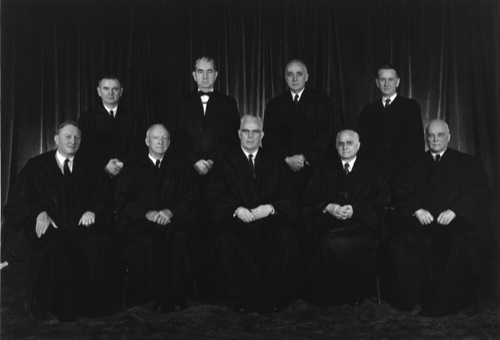
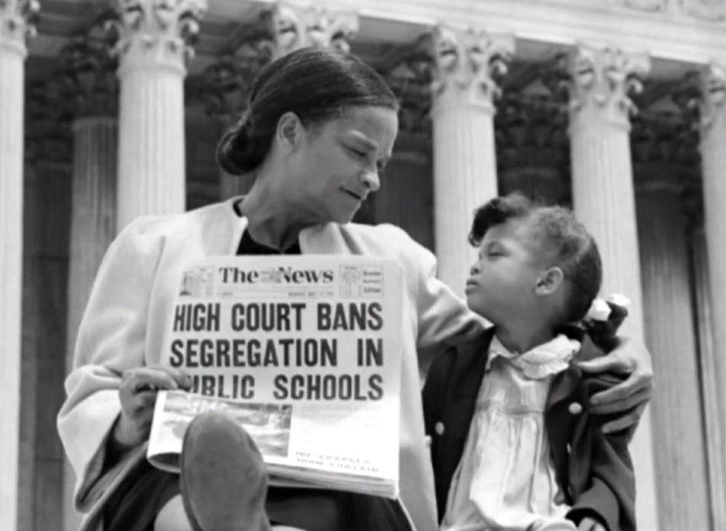
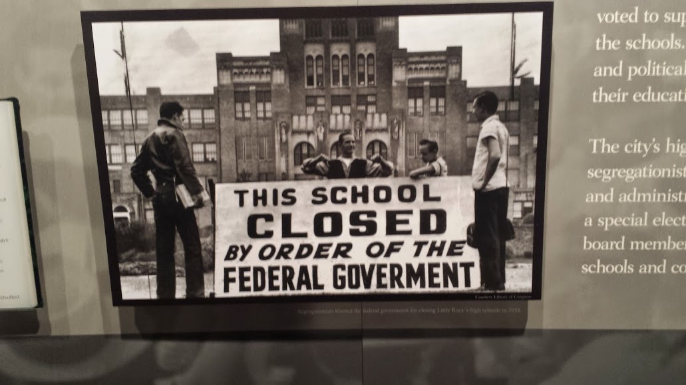

Introduction
- The case of Cooper v Aaron took place on September 11, 1958 and was finally decided on December 12, 1958. This case is about the state of Arkansas enacting laws and adopting measures that were created with the sole purpose of combating the desegregation efforts. This was all to prevent black students from attending previously all white schools.Arkansas used state militias to prevent black students from attending these schools. Brown v Board of Education ruled that segregation in public education was by no means equal and was unconstitutional. They were directly disobeying the Federal district court who denied the request of permission to delay desegregation. When nine African American students attempted to enroll in Little Rock Central High School in September 1957, they were met with violent opposition from a mob.
Legal Proceedings
- The case of Cooper v Aaron came before the Supreme Court where the main issue revolved around the authority of federal courts to enforce their rulings against state resistance. In a unanimous decision, the Court stated that the states were bound by the Supreme court's interpretation of the constitutional matters. Writing for the court, Chief Justice Earl Warren said, “The federal judiciary is supreme in the exposition of the law of the constitution.” The Court emphasized that the Supremacy clause of the Constitution mandates compliance with federal law, including Supreme Court rulings, by all levels of government. Overall the legal proceedings in Cooper v Aaron underscored the fundamental principles of federalism,separation of powers, and the rule of law in the American legal system.

Significance of the case
- This case is very significant because during this time there was a lot of intense political and social tensions surrounding the issue of school desegregation in the United States. If the Supreme Court had not cracked down and taken this seriously then they would most likely see the same issue in other states. It established a clear precedent that the states had to adhere to the Supreme Court's decisions, even if they did not agree with them.The legacy of Cooper v Aaron extends far beyond the realm of desegregation. The case underscored the judiciary's capacity to safeguard minority rights against the tyranny of the majority, thus promoting the enduring principles of equality and justice enshrined in the Constitution.

Conclusion
- The case Cooper v Aaron demonstrated that the judiciary's crucial role in upholding the promises of equality and justice are fulfilled for all citizens. The Court delivered a resounding affirmation of the foundational tenets upon which the nation's democratic experiment rests. At the core of this case Cooper v Aaron exemplifies the vital role of the judiciary as the guardian of individual rights and liberties, particularly in times of societal upheaval and political discord. By unequivocally asserting the supremacy of federal law and binding nature of supreme court decisions on all branches and levels of government. The court reaffirmed the constitutional framework established by the framers to prevent the tyranny of the majority and safeguard minority rights. This case showed how strong the Court stood when in the face of resistance and defiance of federal authority. Injustice was seen and defended in this case.

|